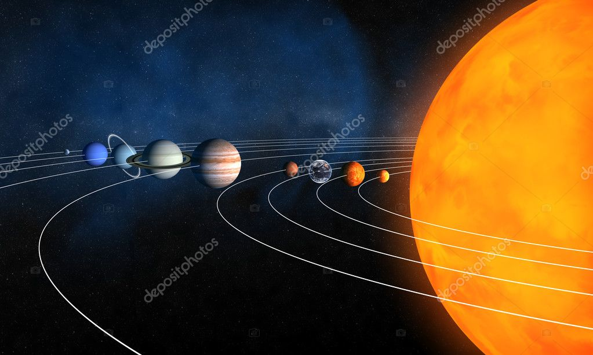
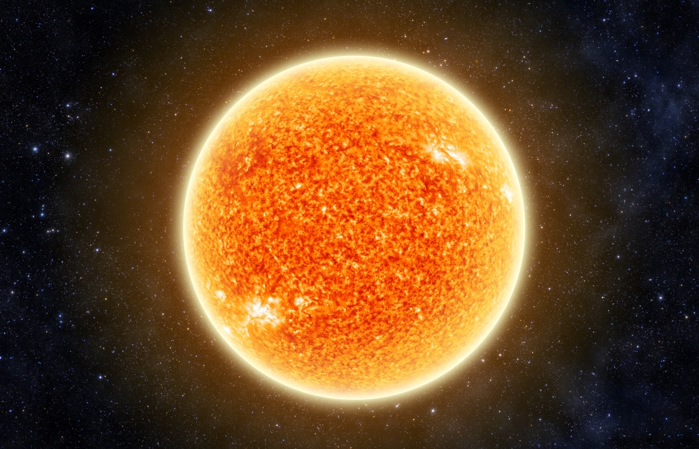
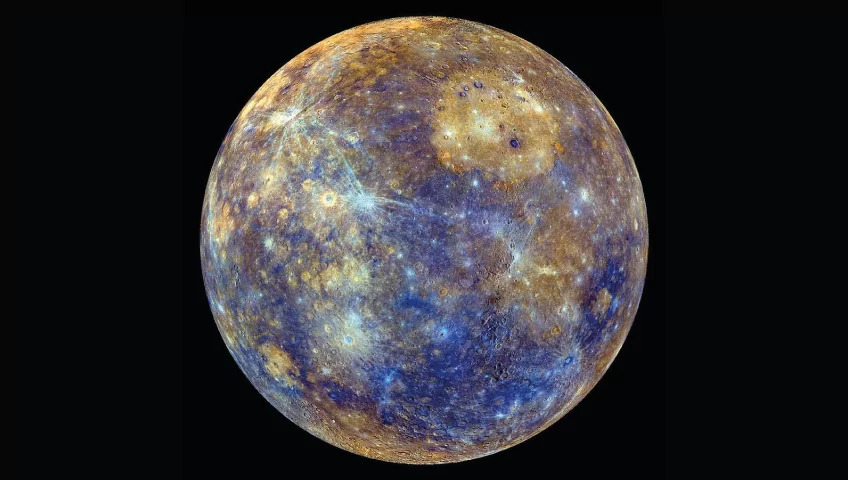
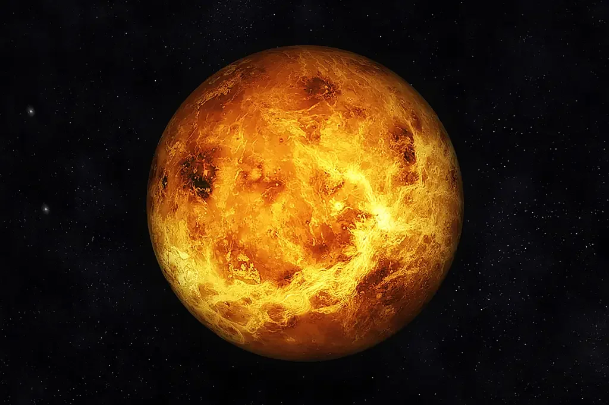
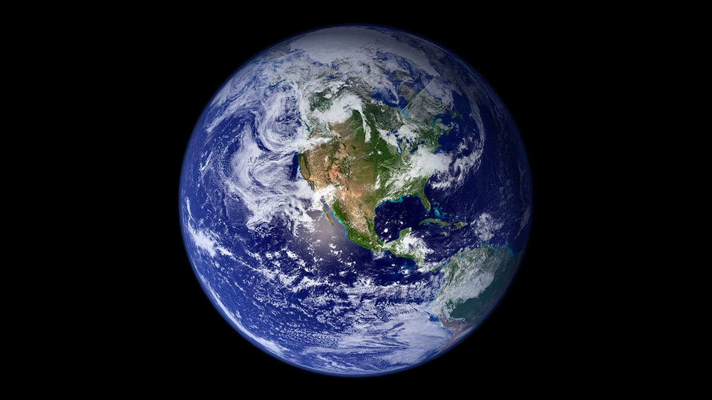
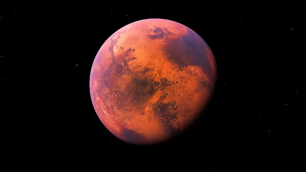
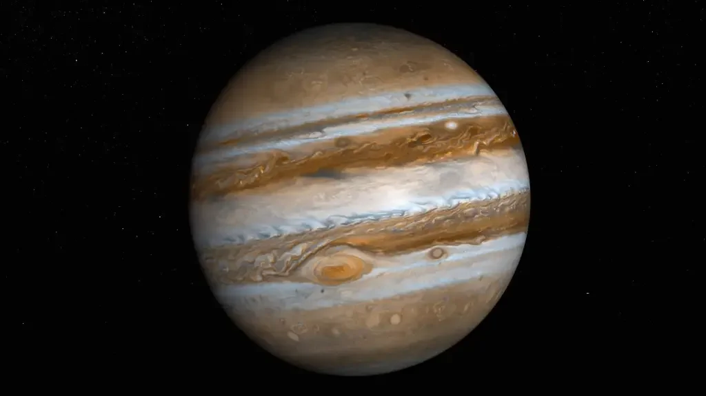
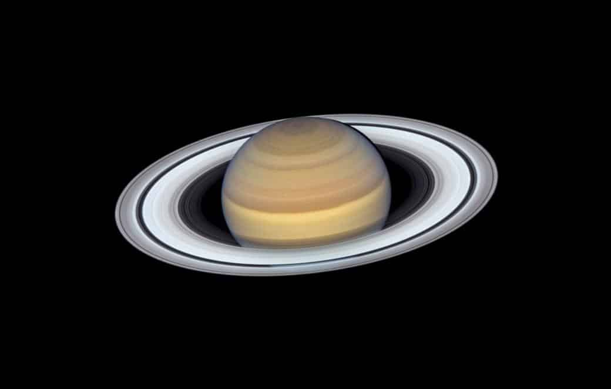
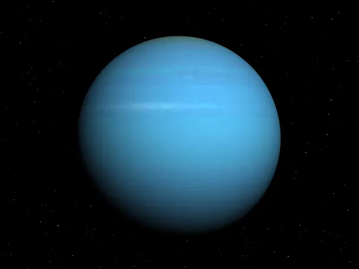
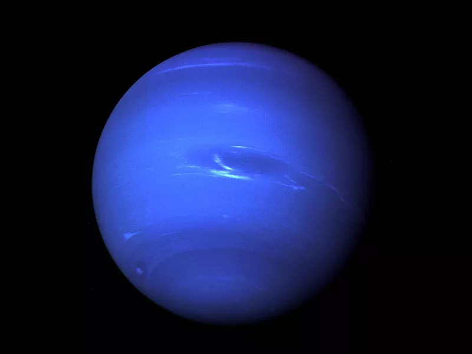

|  | O Sistema Solar é composto pelo Sol e todos os corpos celestes que orbitam ao seu redor, incluindo planetas, asteroides, cometas e satélites naturais. Oito planetas orbitam ao redor do Sol: Mercúrio, Vênus, Terra, Marte, Júpiter, Saturno, Urano e Netuno. |
|  | SOLO Sol é uma estrela de plasma que converte hidrogênio em hélio através de fusão nuclear. Sua energia é a fonte primária de vida na Terra. O Sol tem atividade cíclica e, eventualmente, se transformará em uma gigante vermelha. |
MERCÚRIOMercúrio é o planeta mais próximo do Sol e o menor do sistema solar. É rochoso, sem atmosfera e tem uma superfície coberta de crateras e falhas. Sua temperatura varia de -173 a 427 graus Celsius. |
 |
|  | VÊNUSVênus é o segundo planeta do Sistema Solar e é conhecido por ser o mais próximo da Terra em tamanho e estrutura. Ele é frequentemente referido como o "planeta irmão" da Terra por causa de suas características semelhantes. Vênus é um planeta muito quente, com uma atmosfera densa composta principalmente de dióxido de carbono, o que torna impossível para qualquer forma de vida sobreviver em sua superfície. |
TERRAA Terra é o terceiro planeta do Sistema Solar e é o único planeta conhecido por ter vida. É um planeta rochoso com uma atmosfera que contém uma mistura de gases necessários para sustentar a vida. A Terra é o lar de uma grande variedade de seres vivos e é um lugar único e precioso no universo. |
 |
|  | MARTEMarte é o quarto planeta do Sistema Solar e é um objeto fascinante para a exploração espacial e a pesquisa científica. É um planeta rochoso com uma fina atmosfera composta principalmente de dióxido de carbono. É conhecido como o "Planeta Vermelho" devido à cor avermelhada de sua superfície. |
JÚPITERJúpiter é o maior planeta do Sistema Solar e é um gigante gasoso composto principalmente de hidrogênio e hélio. Possui um grande número de satélites naturais e é conhecido por suas enormes tempestades, incluindo a Grande Mancha Vermelha, uma tempestade gigante que já dura mais de 300 anos. |
 |
|  | SATURNOSaturno é o sexto planeta do Sistema Solar e é um gigante gasoso composto principalmente de hidrogênio e hélio. Ele é conhecido por seus impressionantes anéis, compostos de gelo e partículas de rocha. Saturno também tem muitas luas, incluindo a maior lua do Sistema Solar, Titã. |
URANOUrano é o sétimo planeta do Sistema Solar e é um gigante gasoso composto principalmente de hidrogênio, hélio e metano. Ele é único por sua inclinação axial incomum, o que significa que seu eixo de rotação é quase perpendicular ao plano orbital. Urano tem um grande número de luas e anéis. |
 |
|  | NETUNONetuno é o oitavo e último planeta do Sistema Solar e é um gigante gasoso composto principalmente de hidrogênio, hélio e metano. Ele é conhecido por seus fortes ventos, incluindo o mais rápido vento registrado em qualquer planeta do Sistema Solar. Netuno tem muitas luas, incluindo Tritão, que é o maior satélite natural do planeta. |